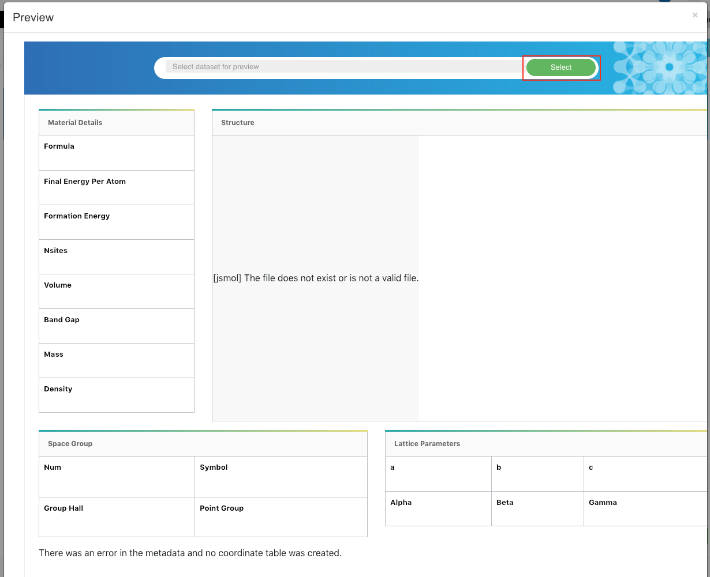
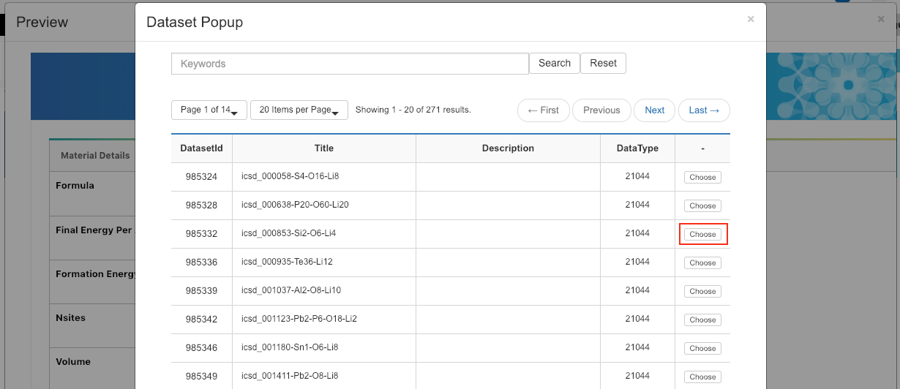
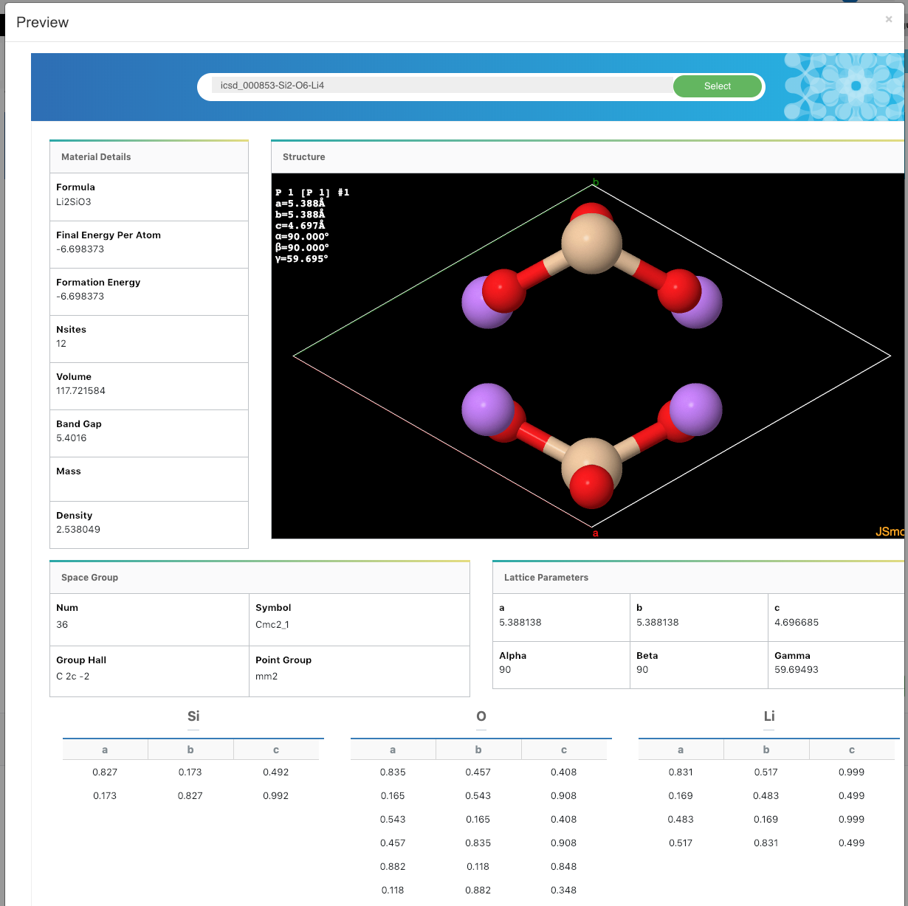

시뮬레이션 데이터의 표현은 솔버(SW)에 따라 또한 사용자의 관심에 따라 달라질 수 있습니다.
예를 들어 소재 분야에서는 시뮬레이션 데이터의 표현을 위해 분자구조 가시화가 필요한 반면, 항공 분야에서의 유동해석 결과 가시화가 필요할 수 있습니다.
데이터 뷰는 시뮬레이션 데이터를 표현하는 방식이자 템플릿입니다.
솔버(SW) 혹은 데이터 타입(data type)은 하나 이상의 데이터 뷰를 가질 수 있습니다.
데이터 뷰가 생성되고 특정 솔버(SW)의 뷰로 설정되며, 특정 솔버(SW)가 생산하는 모든 시뮬레이션 데이터가 설정된 데이터 뷰(view)를 통해 표현됩니다.
예를 들면 아래와 같은 시뮬레이션 결과 데이터의 표현은 솔버(SW)에 정의된 데이터 뷰 템블릿을 통해 생성된 것 입니다.
또한 서술형 메타데이터 추출과 마찬가지로 해당 계산과학 SW와 시뮬레이션 결과에 대해 잘 알고 있는 사람이 아니면 어떤 서술형 메타데이터나 파일을 보여줄지, 그리고 어떤 방식으로 표현해야 할지 알기 어렵다. 이 때문에 데이터 표현 템플릿은 해당 커뮤니티 전문가들이 직접 기여를 통해 개발하고 공유하는 생태계를 갖는 것이 효율적이다. 더하여, 데이터 표현 템플릿이 커뮤니티들에 의해 개발되고 제공된다면 제공된 템플릿에 대한 보안에 대한 우려를 제거할 수 있어야 한다.
데이터 뷰 검색
메뉴의 Tool - View Designer로 이동 합니다.
검색창에 검색할 내용을 입력한 후 Search 버튼을 클릭합니다.
데이터 뷰 Preview
미리보기 할 뷰의 Preview 버튼을 클릭 합니다.
Select 버튼을 클릭하면 Preview 할 데이터셋을 선택 할 수 있습니다.

Choose 버튼을 클릭하여 데이터셋을 선택 합니다.

Preview 화면을 확인 할 수 있습니다.

데이터 뷰 Download
다운로드 할 뷰의 Download 버튼을 클릭 합니다.
해당 뷰의 Html 소스가 다운로드 됩니다.
데이터 뷰 상세보기
상세보기 할 뷰를 선택합니다.
뷰의 상세 내용을 확인 할 수 있고 Select 버튼을 클릭하여 특정 데이터셋의 Preview 를 확인 할 수 있습니다.
상세화면 하단 기능 설명
Create by load : 해당 뷰의 소스를 기준으로 복사하여 다른 뷰를 생성할 수 있음
Edit : 해당 뷰의 수정화면으로 이동
Delete : 뷰 삭제